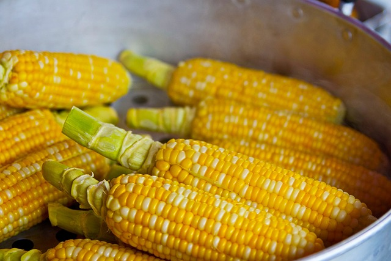

Sobre o Agrinho
O milho foi domesticado pelos povos indígenas mesoamericanos há aproximadamente 10.000 anos, e desde então tem desempenhado um papel cruc
ial na alimentação humana. Seu cultivo se expandiu para todas as partes do globo, com variedades adaptadas a diferentes climas e solos. Atualmente, é uma das culturas mais cultivadas globalmente, com diversas aplicações na alimentação humana, animal e industrial.
Desafios
Nos trópicos, o milho encontra um ambiente ideal devido às condições climáticas consistentemente quentes ao longo do ano, com pouca variação sazonal significativa. Essas temperaturas elevadas promovem um crescimento rápido das plantas de milho, permitindo ciclos de cultivo mais curtos e frequentemente múltiplas colheitas por ano em comparação com climas temperados. Além disso, a radiação solar intensa nos trópicos contribui para a fotossíntese eficiente, resultando em maior produtividade por unidade de área.
Contribuição
Nos trópicos, o milho encontra um ambiente ideal devido às condições climáticas consistentemente quentes ao longo do ano, com pouca variação sazonal significativa. Essas temperaturas elevadas promovem um crescimento rápido das plantas de milho, permitindo ciclos de cultivo mais curtos e frequentemente múltiplas colheitas por ano em comparação com climas temperados. Além disso, a radiação solar intensa nos trópicos contribui para a fotossíntese eficiente, resultando em maior produtividade por unidade de área.

O milho, cientificamente conhecido como Zea mays, é uma das plantas cultivadas mais importantes em todo o mundo. Originário da América Central e México, o milho se espalhou por todo o globo devido à sua adaptabilidade e valor nutricional. Aqui estão alguns pontos importantes sobre o milho:
.
Relogio do milho
7
dias
7
horas
7
min
7
seg